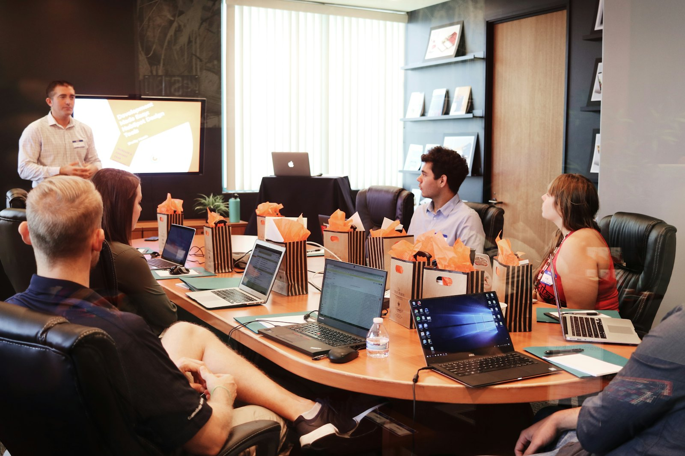

Over dit handboek
Leidinggevenden in zorg, onderwijs, welzijn, cultuur en productie zijn meer tijd kwijt aan administratie dan aan de mensen voor wie ze het doen. Dit handboek laat zien hoe dat anders kan.
Geschreven samen met Claude, gebaseerd op praktijkervaring uit de maatschappelijke sector. Geen hype, geen jargon. Wel concrete instructies, direct toepasbaar. Je hebt geen technische achtergrond nodig.
Het handboek behandelt alles van de eerste setup van een AI-assistent tot dertig concrete toepassingen voor de dagelijkse praktijk van een leidinggevende.
Wat er in staat
-
Deel 1
Het fundament
Waarom AI voor leidinggevenden, hoe het werkt, en wat je er realistisch van kunt verwachten. Inclusief ethische randvoorwaarden.
-
Deel 2
Het systeem inrichten
Stap voor stap je AI-assistent opzetten, van account aanmaken tot je eerste gesprek. Geschikt voor wie nog nooit met AI heeft gewerkt.
-
Deel 3
Permanent geheugen
Hoe je de AI voorziet van blijvende context via een manager-profiel, zodat je niet telkens hoeft uit te leggen wie je bent en wat je nodig hebt.
-
Deel 4
Dertig toepassingen
Concrete gebruikssituaties per thema: dagelijkse praktijk, teamontwikkeling, HR en verzuim, communicatie, analyse en zelfontwikkeling.
-
Deel 5
Verder groeien
Hoe je AI-gebruik geleidelijk uitbreidt, wat te vermijden, en hoe je het gesprek aangaat binnen je organisatie.

Dertig toepassingen
Dagelijkse praktijk
- Vergaderverslagen schrijven
- E-mails opstellen en herschrijven
- Agenda structureren
- Beslissingen documenteren
- Rapportages samenvatten
Teamontwikkeling
- Functioneringsgesprekken voorbereiden
- Onboarding-documenten opstellen
- Feedback formuleren
- Teamoverleg structureren
- Ontwikkelplannen schrijven
HR & verzuim
- Re-integratiegesprekken voorbereiden
- Verzuimcorrespondentie opstellen
- Beleidsteksten herschrijven
- Vacatureteksten schrijven
- Sollicitatieprocedures uitwerken
Communicatie & vergaderen
- Presentaties opzetten
- Nieuwsbrieven schrijven
- Moeilijke boodschappen formuleren
- Notulen omzetten naar actiepunten
- Overlegstructuren ontwerpen
Analyse & inzicht
- Data interpreteren
- Jaarverslagen analyseren
- Subsidieaanvragen toetsen
- Knelpunten in processen opsporen
- Benchmarks uitwerken
Zelfontwikkeling
- Reflectieoefeningen doen
- Leiderschapsdilemma's doordenken
- Literatuur samenvatten
- Persoonlijke doelen formuleren
- Studiegesprekken voorbereiden
Voor wie
Geschreven voor leidinggevenden in de maatschappelijke sector die AI willen inzetten zonder dat ze er technisch in hoeven te duiken. Je hoeft niets te programmeren of te installeren.
Download handboek (.pdf)